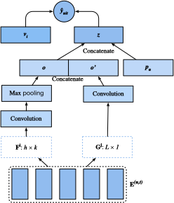
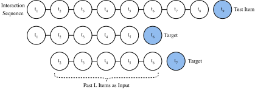

Hệ thống gợi ý nhận biết chuỗi¶
Trong các phần trước, chúng ta trừu tượng hóa tác vụ gợi ý thành một bài toán hoàn thành ma trận mà không xét các hành vi ngắn hạn của người dùng. Trong phần này, chúng ta sẽ giới thiệu một mô hình gợi ý có xét đến các log tương tác người dùng được sắp xếp theo trình tự. Đây là một hệ thống gợi ý nhận biết chuỗi [Quadrana.Cremonesi.Jannach.2018], trong đó đầu vào là một danh sách có thứ tự và thường có timestamp gồm các hành động trước đây của người dùng. Nhiều tài liệu gần đây đã chứng minh tính hữu ích của việc đưa thông tin như vậy vào mô hình hóa các mẫu hành vi theo thời gian của người dùng và phát hiện sự dịch chuyển sở thích của họ.
Mô hình mà chúng ta sẽ giới thiệu, Caser [Tang.Wang.2018], viết tắt của convolutional sequence embedding recommendation model, sử dụng mạng nơ-ron tích chập để nắm bắt ảnh hưởng của các mẫu động trong hoạt động gần đây của người dùng. Thành phần chính của Caser gồm một mạng tích chập ngang và một mạng tích chập dọc, lần lượt nhằm khám phá các mẫu chuỗi ở mức liên hợp và mức điểm. Mẫu mức điểm chỉ tác động của một vật phẩm đơn lẻ trong chuỗi lịch sử lên vật phẩm mục tiêu, trong khi mẫu mức liên hợp ngụ ý ảnh hưởng của một số hành động trước đó lên mục tiêu tiếp theo. Ví dụ, mua cả sữa và bơ cùng nhau dẫn đến xác suất mua bột mì cao hơn so với chỉ mua một trong hai. Hơn nữa, sở thích chung của người dùng, hay sở thích dài hạn, cũng được mô hình hóa trong các tầng fully connected cuối cùng, tạo ra một mô hình hóa toàn diện hơn về sở thích người dùng. Chi tiết của mô hình được mô tả như sau.
Kiến trúc mô hình¶
Trong hệ thống gợi ý nhận biết chuỗi, mỗi người dùng được gắn với một chuỗi gồm một số vật phẩm từ tập vật phẩm. Gọi \(S^u = (S_1^u, ... S_{|S_u|}^u)\) là chuỗi có thứ tự. Mục tiêu của Caser là gợi ý vật phẩm bằng cách xét cả thị hiếu chung của người dùng lẫn ý định ngắn hạn. Giả sử chúng ta xét \(L\) vật phẩm trước đó, một ma trận embedding biểu diễn các tương tác trước đây tại bước thời gian \(t\) có thể được xây dựng:
trong đó \(\mathbf{Q} \in \mathbb{R}^{n \times k}\) biểu diễn các embedding vật phẩm và \(\mathbf{q}_i\) biểu thị hàng thứ \(i^\textrm{th}\). \(\mathbf{E}^{(u, t)} \in \mathbb{R}^{L \times k}\) có thể được dùng để suy ra sở thích nhất thời của người dùng \(u\) tại bước thời gian \(t\). Chúng ta có thể xem ma trận đầu vào \(\mathbf{E}^{(u, t)}\) như một ảnh, là đầu vào của hai thành phần tích chập tiếp theo.
Tầng tích chập ngang có \(d\) bộ lọc ngang \(\mathbf{F}^j \in \mathbb{R}^{h \times k}, 1 \leq j \leq d, h = \{1, ..., L\}\), và tầng tích chập dọc có \(d'\) bộ lọc dọc \(\mathbf{G}^j \in \mathbb{R}^{ L \times 1}, 1 \leq j \leq d'\). Sau một chuỗi các phép toán tích chập và pooling, chúng ta thu được hai đầu ra:
trong đó \(\mathbf{o} \in \mathbb{R}^d\) là đầu ra của mạng tích chập ngang và \(\mathbf{o}' \in \mathbb{R}^{kd'}\) là đầu ra của mạng tích chập dọc. Để đơn giản, chúng ta bỏ qua chi tiết của các phép toán tích chập và pooling. Chúng được nối lại và đưa vào một tầng mạng nơ-ron fully connected để thu được các biểu diễn bậc cao hơn.
trong đó \(\mathbf{W} \in \mathbb{R}^{k \times (d + kd')}\) là ma trận trọng số và \(\mathbf{b} \in \mathbb{R}^k\) là độ lệch. Vector học được \(\mathbf{z} \in \mathbb{R}^k\) là biểu diễn của ý định ngắn hạn của người dùng.
Cuối cùng, hàm dự đoán kết hợp sở thích ngắn hạn và thị hiếu chung của người dùng, được định nghĩa là:
trong đó \(\mathbf{V} \in \mathbb{R}^{n \times 2k}\) là một ma trận embedding vật phẩm khác. \(\mathbf{b}' \in \mathbb{R}^n\) là độ lệch riêng của vật phẩm. \(\mathbf{P} \in \mathbb{R}^{m \times k}\) là ma trận embedding người dùng cho thị hiếu chung của người dùng. \(\mathbf{p}_u \in \mathbb{R}^{ k}\) là hàng thứ \(u^\textrm{th}\) của \(P\) và \(\mathbf{v}_i \in \mathbb{R}^{2k}\) là hàng thứ \(i^\textrm{th}\) của \(\mathbf{V}\).
Mô hình có thể được học bằng mất mát BPR hoặc Hinge. Kiến trúc của Caser được trình bày dưới đây:

Trước tiên, chúng ta nhập các thư viện cần thiết.
#@tab mxnet
from d2l import mxnet as d2l
from mxnet import gluon, np, npx
from mxnet.gluon import nn
import mxnet as mx
import random
npx.set_np()
Triển khai mô hình¶
Đoạn mã sau triển khai mô hình Caser. Nó gồm một tầng tích chập dọc, một tầng tích chập ngang và một tầng fully connected.
#@tab mxnet
class Caser(nn.Block):
def __init__(self, num_factors, num_users, num_items, L=5, d=16,
d_prime=4, drop_ratio=0.05, **kwargs):
super(Caser, self).__init__(**kwargs)
self.P = nn.Embedding(num_users, num_factors)
self.Q = nn.Embedding(num_items, num_factors)
self.d_prime, self.d = d_prime, d
# Vertical convolution layer
self.conv_v = nn.Conv2D(d_prime, (L, 1), in_channels=1)
# Horizontal convolution layer
h = [i + 1 for i in range(L)]
self.conv_h, self.max_pool = nn.Sequential(), nn.Sequential()
for i in h:
self.conv_h.add(nn.Conv2D(d, (i, num_factors), in_channels=1))
self.max_pool.add(nn.MaxPool1D(L - i + 1))
# Fully connected layer
self.fc1_dim_v, self.fc1_dim_h = d_prime * num_factors, d * len(h)
self.fc = nn.Dense(in_units=d_prime * num_factors + d * L,
activation='relu', units=num_factors)
self.Q_prime = nn.Embedding(num_items, num_factors * 2)
self.b = nn.Embedding(num_items, 1)
self.dropout = nn.Dropout(drop_ratio)
def forward(self, user_id, seq, item_id):
item_embs = np.expand_dims(self.Q(seq), 1)
user_emb = self.P(user_id)
out, out_h, out_v, out_hs = None, None, None, []
if self.d_prime:
out_v = self.conv_v(item_embs)
out_v = out_v.reshape(out_v.shape[0], self.fc1_dim_v)
if self.d:
for conv, maxp in zip(self.conv_h, self.max_pool):
conv_out = np.squeeze(npx.relu(conv(item_embs)), axis=3)
t = maxp(conv_out)
pool_out = np.squeeze(t, axis=2)
out_hs.append(pool_out)
out_h = np.concatenate(out_hs, axis=1)
out = np.concatenate([out_v, out_h], axis=1)
z = self.fc(self.dropout(out))
x = np.concatenate([z, user_emb], axis=1)
q_prime_i = np.squeeze(self.Q_prime(item_id))
b = np.squeeze(self.b(item_id))
res = (x * q_prime_i).sum(1) + b
return res
Bộ dữ liệu tuần tự với lấy mẫu âm¶
Để xử lý dữ liệu tương tác tuần tự, chúng ta cần triển khai lại lớp Dataset. Đoạn mã sau tạo một lớp bộ dữ liệu mới tên là SeqDataset. Trong mỗi mẫu, nó xuất định danh người dùng, \(L\) vật phẩm đã tương tác trước đó của người đó dưới dạng một chuỗi, và vật phẩm tiếp theo mà người đó tương tác làm mục tiêu. Hình sau minh họa quá trình nạp dữ liệu cho một người dùng. Giả sử người dùng này thích 9 bộ phim, chúng ta sắp xếp chín bộ phim này theo thứ tự thời gian. Bộ phim mới nhất được giữ lại làm vật phẩm kiểm tra. Với tám bộ phim còn lại, chúng ta có thể thu được ba mẫu huấn luyện, mỗi mẫu chứa một chuỗi năm (\(L=5\)) bộ phim và vật phẩm ngay sau nó làm vật phẩm mục tiêu. Các mẫu âm cũng được đưa vào bộ dữ liệu tùy chỉnh.

#@tab mxnet
class SeqDataset(gluon.data.Dataset):
def __init__(self, user_ids, item_ids, L, num_users, num_items,
candidates):
user_ids, item_ids = np.array(user_ids), np.array(item_ids)
sort_idx = np.array(sorted(range(len(user_ids)),
key=lambda k: user_ids[k]))
u_ids, i_ids = user_ids[sort_idx], item_ids[sort_idx]
temp, u_ids, self.cand = {}, u_ids.asnumpy(), candidates
self.all_items = set([i for i in range(num_items)])
[temp.setdefault(u_ids[i], []).append(i) for i, _ in enumerate(u_ids)]
temp = sorted(temp.items(), key=lambda x: x[0])
u_ids = np.array([i[0] for i in temp])
idx = np.array([i[1][0] for i in temp])
self.ns = ns = int(sum([c - L if c >= L + 1 else 1 for c
in np.array([len(i[1]) for i in temp])]))
self.seq_items = np.zeros((ns, L))
self.seq_users = np.zeros(ns, dtype='int32')
self.seq_tgt = np.zeros((ns, 1))
self.test_seq = np.zeros((num_users, L))
test_users, _uid = np.empty(num_users), None
for i, (uid, i_seq) in enumerate(self._seq(u_ids, i_ids, idx, L + 1)):
if uid != _uid:
self.test_seq[uid][:] = i_seq[-L:]
test_users[uid], _uid = uid, uid
self.seq_tgt[i][:] = i_seq[-1:]
self.seq_items[i][:], self.seq_users[i] = i_seq[:L], uid
def _win(self, tensor, window_size, step_size=1):
if len(tensor) - window_size >= 0:
for i in range(len(tensor), 0, - step_size):
if i - window_size >= 0:
yield tensor[i - window_size:i]
else:
break
else:
yield tensor
def _seq(self, u_ids, i_ids, idx, max_len):
for i in range(len(idx)):
stop_idx = None if i >= len(idx) - 1 else int(idx[i + 1])
for s in self._win(i_ids[int(idx[i]):stop_idx], max_len):
yield (int(u_ids[i]), s)
def __len__(self):
return self.ns
def __getitem__(self, idx):
neg = list(self.all_items - set(self.cand[int(self.seq_users[idx])]))
i = random.randint(0, len(neg) - 1)
return (self.seq_users[idx], self.seq_items[idx], self.seq_tgt[idx],
neg[i])
Nạp bộ dữ liệu MovieLens 100K¶
Sau đó, chúng ta đọc và chia bộ dữ liệu MovieLens 100K ở chế độ nhận biết chuỗi, rồi nạp dữ liệu huấn luyện bằng dataloader tuần tự được triển khai ở trên.
#@tab mxnet
TARGET_NUM, L, batch_size = 1, 5, 4096
df, num_users, num_items = d2l.read_data_ml100k()
train_data, test_data = d2l.split_data_ml100k(df, num_users, num_items,
'seq-aware')
users_train, items_train, ratings_train, candidates = d2l.load_data_ml100k(
train_data, num_users, num_items, feedback="implicit")
users_test, items_test, ratings_test, test_iter = d2l.load_data_ml100k(
test_data, num_users, num_items, feedback="implicit")
train_seq_data = SeqDataset(users_train, items_train, L, num_users,
num_items, candidates)
train_iter = gluon.data.DataLoader(train_seq_data, batch_size, True,
last_batch="rollover",
num_workers=d2l.get_dataloader_workers())
test_seq_iter = train_seq_data.test_seq
train_seq_data[0]
Cấu trúc dữ liệu huấn luyện được hiển thị ở trên. Phần tử đầu tiên là định danh người dùng, danh sách tiếp theo chỉ năm vật phẩm gần nhất mà người dùng này thích, và phần tử cuối cùng là vật phẩm mà người dùng này thích sau năm vật phẩm đó.
Huấn luyện mô hình¶
Bây giờ, hãy huấn luyện mô hình. Chúng ta dùng cùng thiết lập như NeuMF, bao gồm tốc độ học, optimizer và \(k\), ở phần trước để các kết quả có thể so sánh được.
#@tab mxnet
devices = d2l.try_all_gpus()
net = Caser(10, num_users, num_items, L)
net.initialize(ctx=devices, force_reinit=True, init=mx.init.Normal(0.01))
lr, num_epochs, wd, optimizer = 0.04, 8, 1e-5, 'adam'
loss = d2l.BPRLoss()
trainer = gluon.Trainer(net.collect_params(), optimizer,
{"learning_rate": lr, 'wd': wd})
# Running takes > 1h (pending fix from MXNet)
# d2l.train_ranking(net, train_iter, test_iter, loss, trainer, test_seq_iter, num_users, num_items, num_epochs, devices, d2l.evaluate_ranking, candidates, eval_step=1)
Tóm tắt¶
- Suy ra sở thích ngắn hạn và dài hạn của một người dùng có thể giúp dự đoán vật phẩm tiếp theo mà người đó ưa thích hiệu quả hơn.
- Mạng nơ-ron tích chập có thể được dùng để nắm bắt sở thích ngắn hạn của người dùng từ các tương tác tuần tự.
Bài tập¶
- Thực hiện một nghiên cứu ablation bằng cách loại bỏ một trong hai mạng tích chập ngang và dọc; thành phần nào quan trọng hơn?
- Thay đổi siêu tham số \(L\). Các tương tác lịch sử dài hơn có mang lại độ chính xác cao hơn không?
- Ngoài tác vụ gợi ý nhận biết chuỗi đã giới thiệu ở trên, còn có một loại tác vụ gợi ý nhận biết chuỗi khác gọi là gợi ý dựa trên phiên [Hidasi.Karatzoglou.Baltrunas.ea.2015]. Bạn có thể giải thích sự khác biệt giữa hai tác vụ này không?